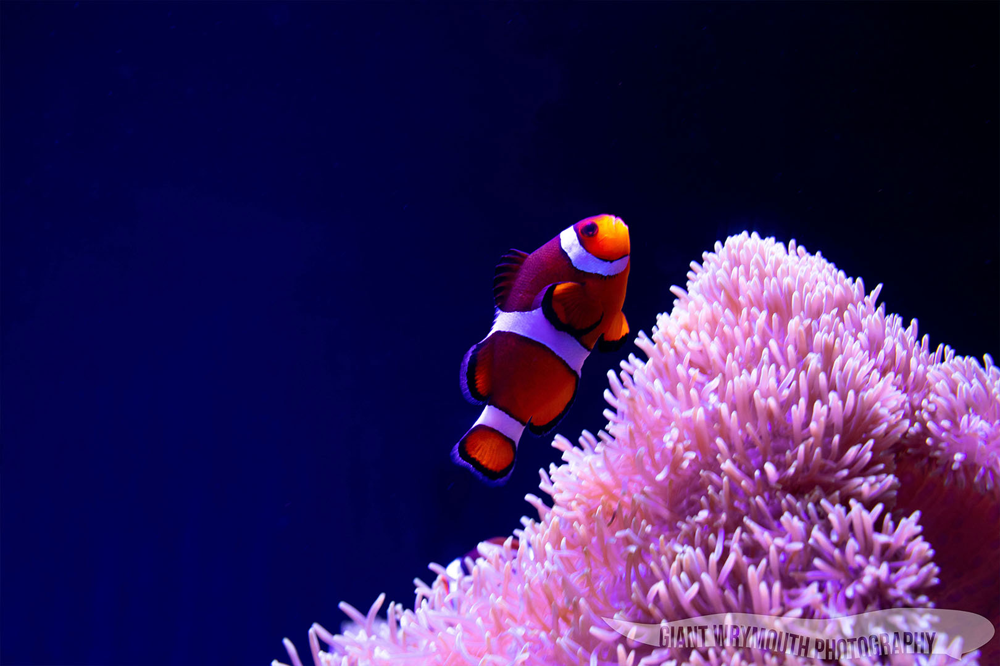

Welcome
Hey there! My name is Griffin, I am an experienced portrait, family, and event photographer serving the Greater Seattle Area.
The Giant Wrymouth is a species of fish found in the Pacific Northwest. Fondly refered to as a "Potato Head," not much is known about this fish, other than the fact that it is cousins with the Wolf Eel (which, despite its name, is not an actual eel). The only ones in captivity were found on accident while discovery crews were looking for other fish (the story goes that The Seattle Aquarium's Princess swam into the catching net on its own).
Other than simply being my favorite fish, I feel a connection to this little opportunistic underdog. This is why I've decided to name my photography business after the Giant Wrymouth!
Working with me is like a walk in the park - simple and conversational - this is by design, as I believe people look their best when they are relaxed and enjoying themselves! Let me worry about the details and making you look good.
While I'm a professional photographer, I am also an avid hobbyist. I'm always looking for new and exciting ways to express my creative freedom. As a result, the images I take during these adventures are always available to purchase as a print. I also provide custom print services for client photoshoots.
